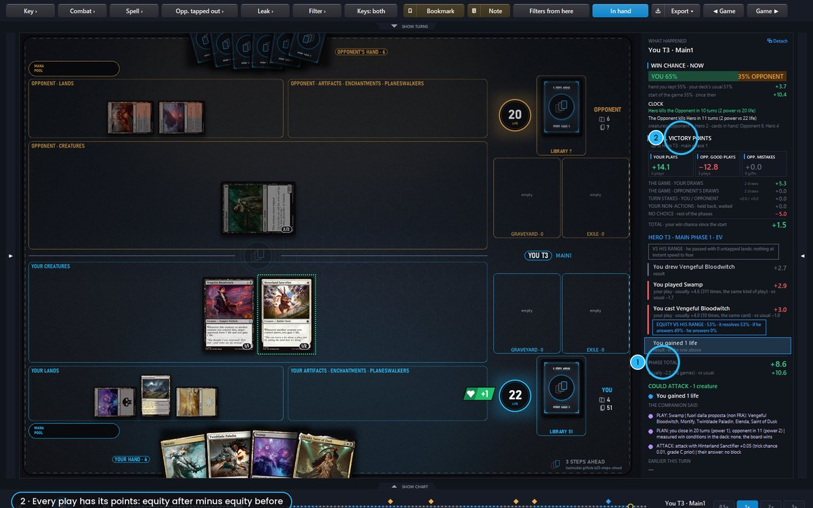
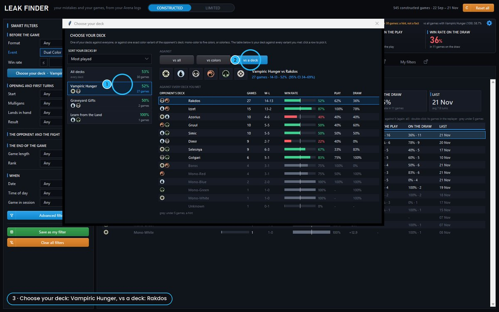
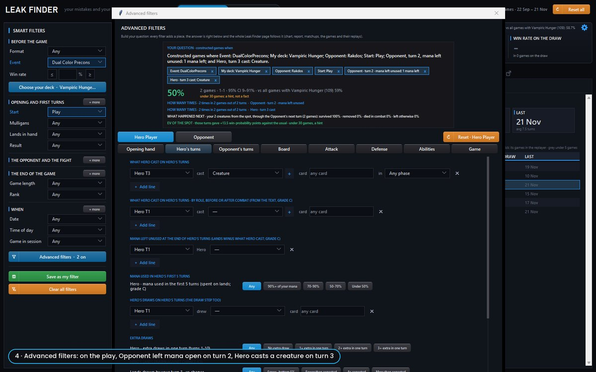
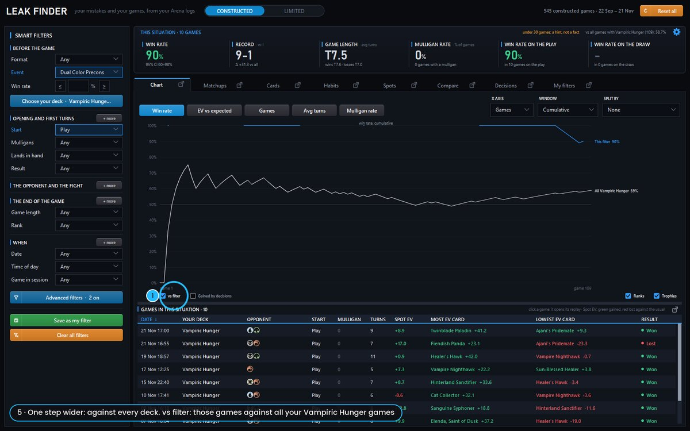

What equity means in Magic, step by step
Poker players talk about equity all the time. In Magic it is the same idea: your share of the game right now. This article explains what it is, how 3 Steps Ahead measures it, why every choice you make is a change in equity, and then walks through a real question from our own games: on turn 3, with the opponent holding mana open, do you cast your creature?

1 · Equity is your chance to win, right now
At the start of a game both players bring the same stake: 20 life, seven cards, a deck. Every turn moves a piece of that stake from one side of the table to the other. Your equity is the share of the game that is yours at a given moment: if a hundred players sat down in your exact spot, how many would win from there.
In the replayer it is the WIN CHANCE bar at the top of the story: Hero in green, the Opponent in orange, and how much it moved since the start of the game.
2 · Where the number comes from
Nobody can compute the exact equity of a Magic game: the hidden cards and the choices still to come are too many. What we can do is measure it. The model behind WIN CHANCE was trained on millions of turns of public games recorded by 17Lands players (CC BY 4.0): life totals, creatures on both sides, cards in hand, lands, whose turn it is, and the cards themselves. For each table it says how often games that looked like this one were won.
That has two consequences worth knowing:
- It is realized equity against real players, not a theoretical value against perfect ones. It already contains how people actually play.
- It is an estimate. It is very good at telling a better table from a worse one, and less sure about the exact percentage. Use it to compare, not as a promise.
3 · Every choice is a change in equity: that is EV
If equity is your share of the game, the value of a play is simple: equity after the play minus equity before it. That difference is the EV of the play, in points of win chance. Casting a creature that takes you from 46% to 51% is worth +5. Losing two creatures in a bad block might cost −12.
In the replayer, at the end of each phase, every choice gets its points: your plays, the Opponent's good plays and the Opponent's mistakes, and the phase total against your usual. TOTAL VICTORY POINTS adds them up for the whole game.

4 · One spot is a hint. Many spots are data
A single game tells you what happened, not what usually happens: the Opponent might have had the removal spell that time and not the next. To know if a play is good, you look at all the times you were in a similar spot, and compare the ones where you made the play with the ones where you didn't.
That is what the Leak Finder does. Here is the question from our own log.
5 · Build the spot in the Leak Finder
Switch to CONSTRUCTED, set Event to Dual Color Precons, and in Choose your deck pick Vampiric Hunger. To start narrow, choose vs a deck and pick Rakdos.

The spot depends on who starts: on the play, the Opponent's turn right before your turn 3 is their turn 2. So set Start to Play, then open Advanced filters. In Hero Player, Hero's turns, set turn 3 to cast a Creature. In Opponent, Opponent's turns, set the mana they left unused on turn 2 to 1 mana left.

6 · Read the answer, one step wider at a time
Against Rakdos only, the exact spot is too rare to answer: on the play, with the Opponent leaving one mana open on turn 2, Hero cast a creature on turn 3 twice (1-1) and held it once (0-1). That is noise. When the exact spot has too few games, widen it one step and see if the answer holds.
- Vampiric Hunger against Rakdos: creature cast 1-1, nothing cast 0-1. Too few games.
- Vampiric Hunger against every deck: creature cast 9-1, nothing cast 2-1. Still few games, but now the direction is clear.
- Counting the draw too (where the turn before is the Opponent's turn 3) and any amount of open mana: creature cast 23-5, held 8-7. Same direction, more games.

The answer, for this deck: cast the creature. Open mana is a real threat, but in our games holding the creature back cost more than the removal spell it was afraid of. Turn 3 is where a deck like this one builds its board, and an empty turn 3 is equity you never get back.
7 · What this does not tell you
- It compares your games. If you held the creature only when your hand was weak, part of the difference is the hand, not the choice. More games, and more players sharing theirs, make this cleaner.
- Win records count the whole game; the EV of the turn counts only that turn. When both point the same way, as here, you can trust the direction more.
- A deck that wins with instant-speed tricks may give a different answer. Ask the same question of your own deck: the steps are the same.
New in 0.1.130
This version brings more of the equity engine into the replayer:
- CLOCK under the win chance: in how many turns the power on the battlefield of each player kills the other, power against life, and the cards in hand. It explains the number, it doesn't change it.
- EQUITY VS HIS RANGE under each of your spells in Constructed: how often it goes through against the answers the Opponent's list can still hold, weighted by the chance they answer.
- The equity of every attack and block: a rules solver of combat damage against the Opponent's possible answers.
- LOSES TO in the Limited replayer: the kinds of cards that would have cost you the most.
- One steadier win-chance reading at every step, and the Leak Finder opens in about 3 seconds.